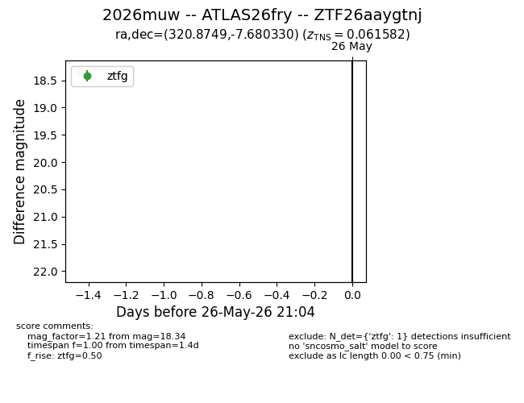
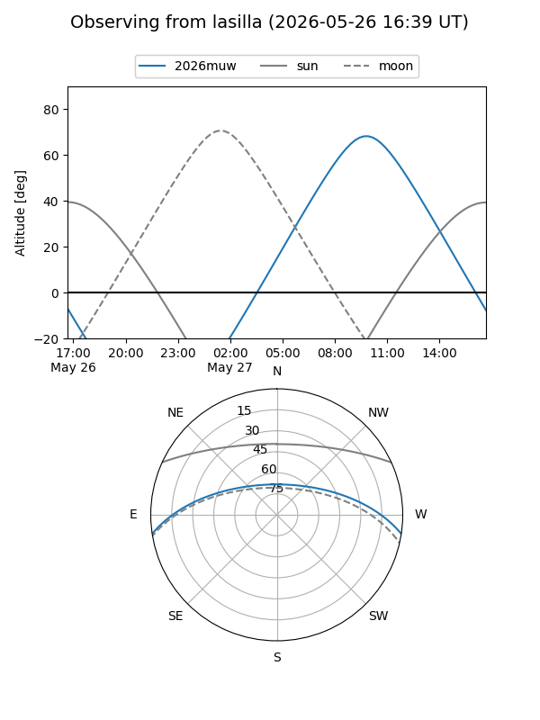
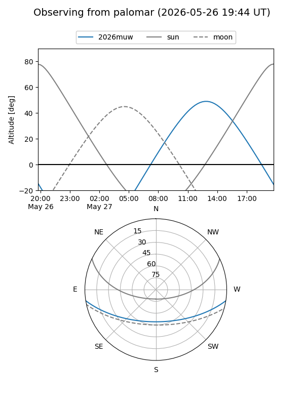
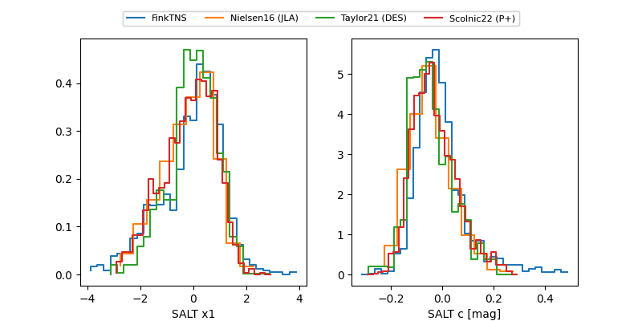

2026muw
Target 2026muw at 2026-05-26 21:11
Aliases and brokers:
lsst-FINK: link
lsst-Lasair: link
lsst-ALeRCE: link
ztf-FINK: link
ztf-Lasair: link
ztf-ALeRCE: link
TNS: link
YSE: link
alt names
ZTF26aaygtnj (ztf,fink_ztf)
2026muw (tns,yse)
ATLAS26fry (atlas)
Coordinates:
equatorial (ra, dec) = 320.8749,-7.68033
equatorial (HMS+DMS) = 21:23:29.98,-07:40:49.19
galactic (l, b) = (44.4682,-37.16722)
Flags:
TNS confirmed: SN IIn
TNS redshift: 0.061582
Photometry:
last ztfg=18.34
1 ztfg detections
Lightcurve

Visibility


Additional plots
